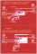
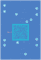

MP2322A vs TP62901


Schematic

Layout






Files
Datasheets
Links to the manufacturers' own pages (current revision); the PDFs are not copied here.


Links to the manufacturers' own pages (current revision); the PDFs are not copied here.